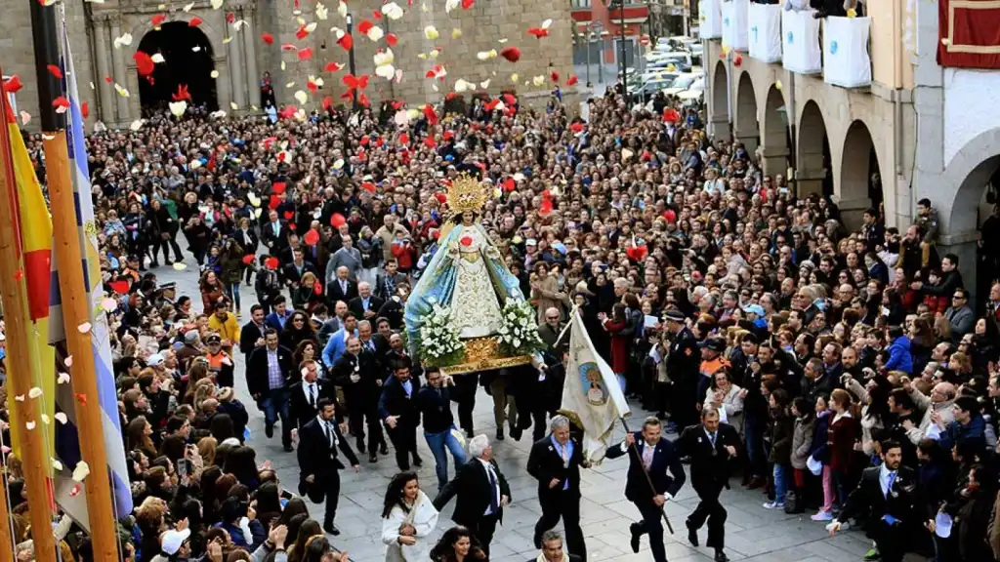
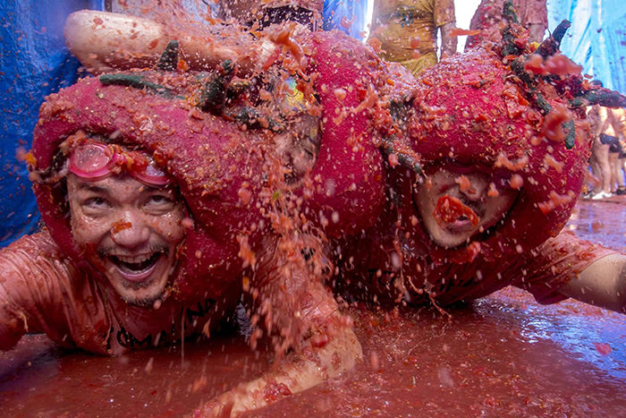

Cultura
A cultura espanhola é cheia de influências, com origens que romontam aos celtas, celtiberas, latinos, católicos romanos e até com os islâmicos. O país é formado por 17 comunidades autônomas, sendo as mais conhecidas: Catalunha, País Basco, Andaluzia e Galícia. Cada uma delas com uma cultura e uma tradição próprias, mas, claro, dividindo manifestações culturais de todo um povo.
Festas tradicionais
A maioria das cidades da Espanha, independente do tamanho, tem suas próprias festas populares, celebradas uma vez por ano. A duração das chamadas Fiestas Populares varia e em alguns lugares as celebrações podem durar até uma semana inteira. São muitas as datas marcantes e as ocasiões para dançar e comer comidas típicas na Espanha! Quer ver alguns exemplos? Separamos as principais festividades para você.
Semana Santa (Semana Santa)
A Semana Santa é uma das festas mais importantes da Espanha, celebrada com grande devoção em todo o país. Ela ocorre na semana que antecede a Páscoa e envolve procissões religiosas impressionantes, com destaque para as cidades de Sevilha e Málaga.
La Tomatina
Realizada na pequena cidade de Buñol, perto de Valência, esta festa envolve uma enorme batalha de tomates. Milhares de pessoas se reúnem para atirar tomates uns nos outros na última quarta-feira de agosto.